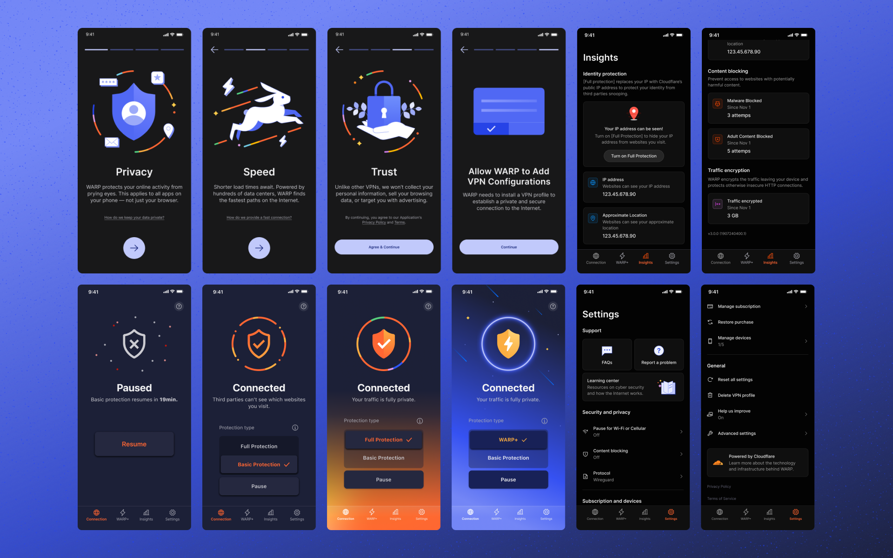
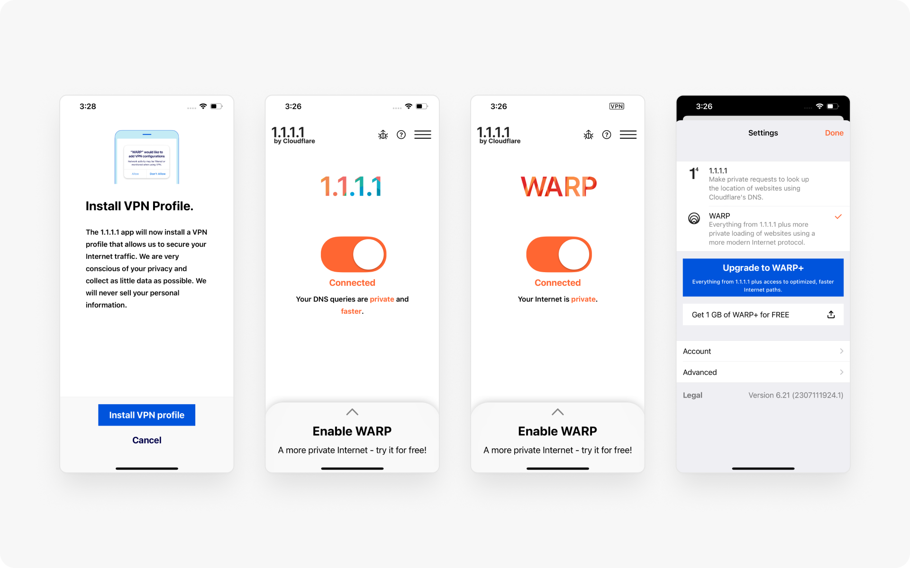
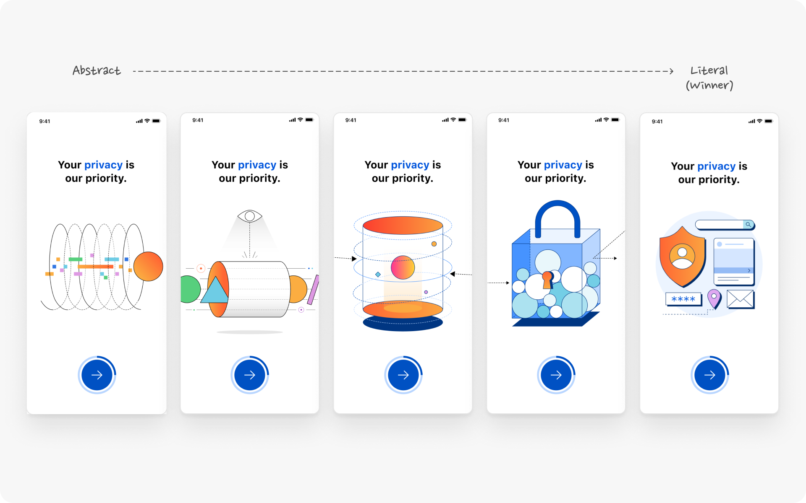
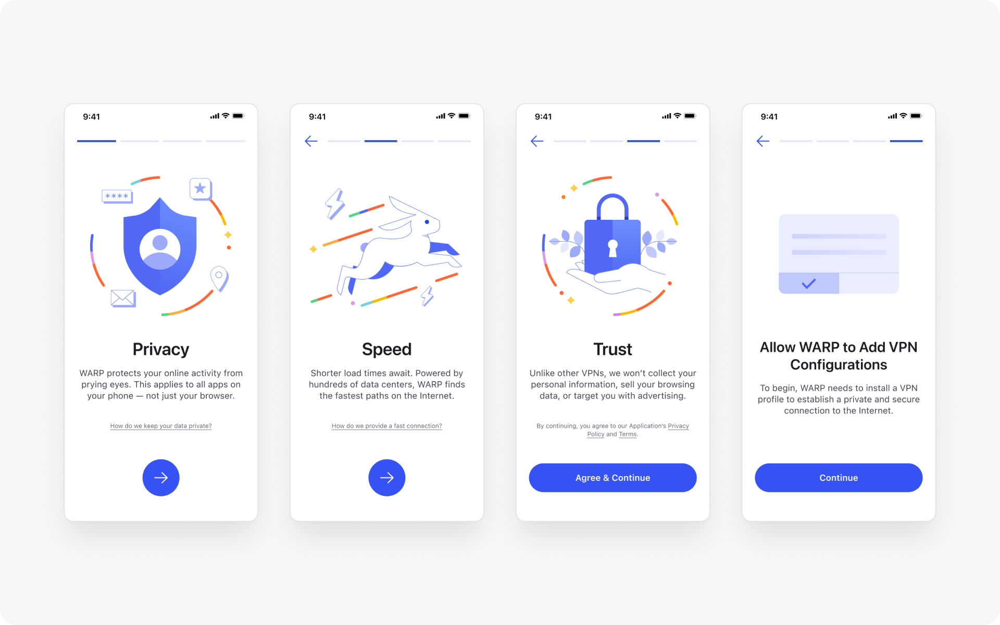
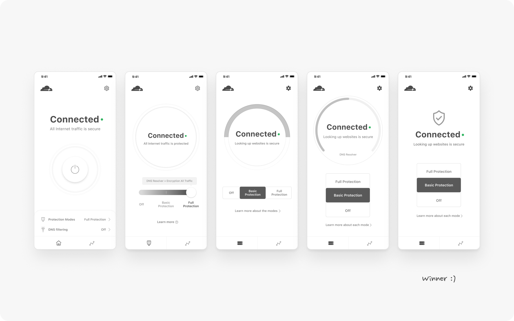
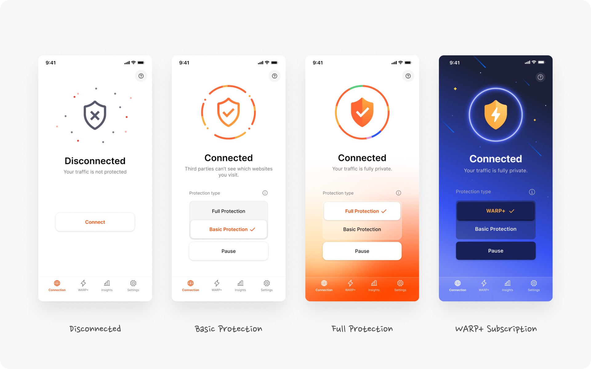
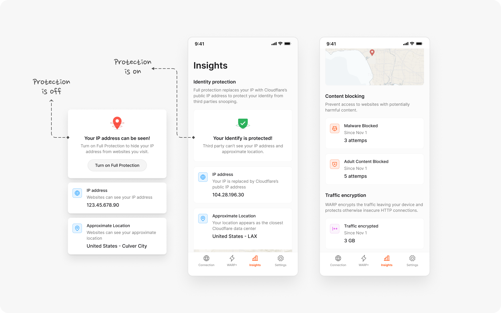
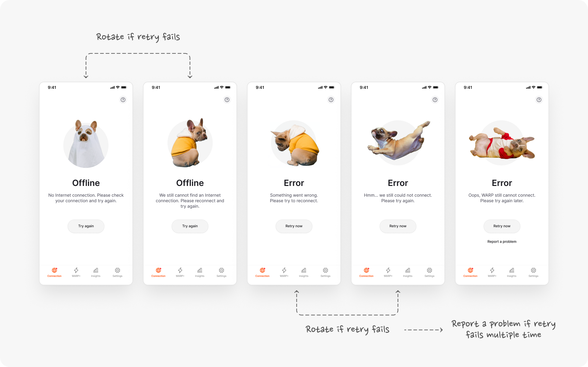
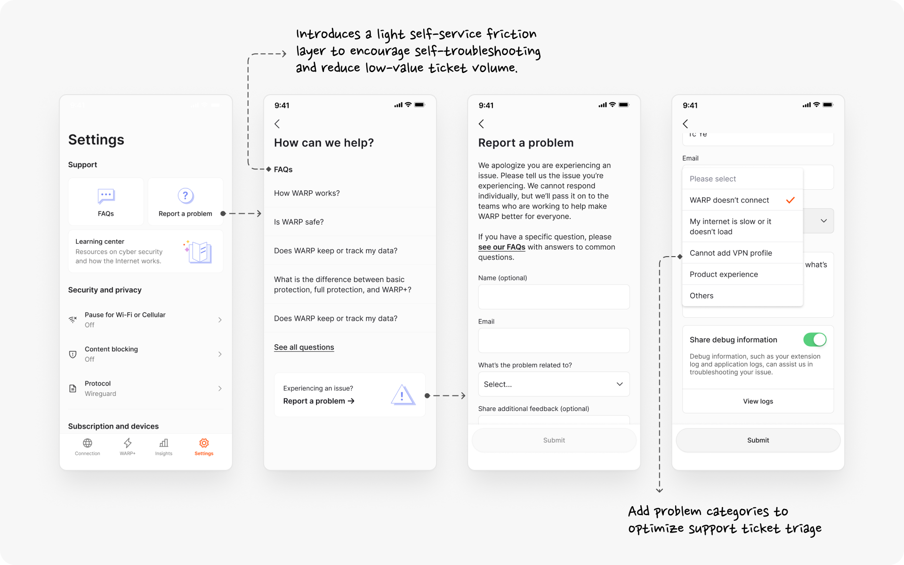
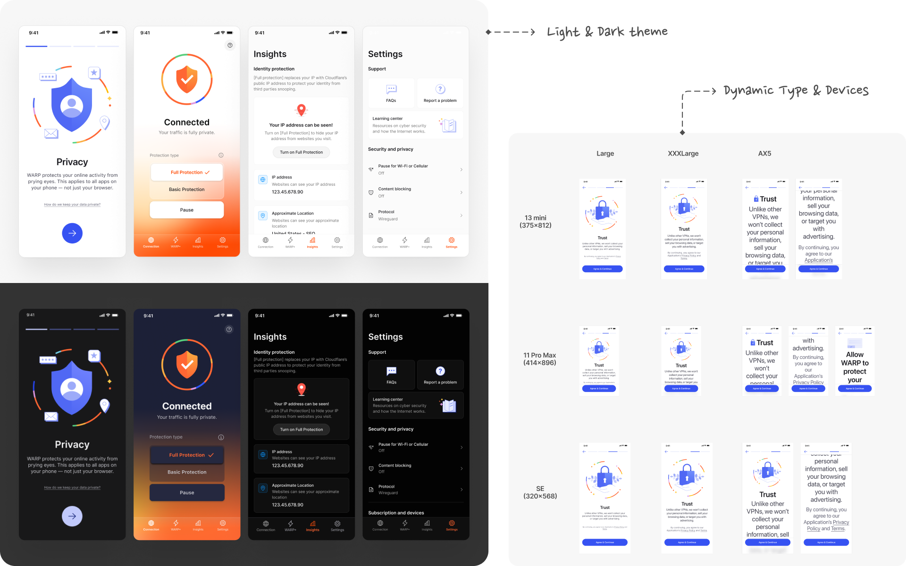

WARP: Consumer Privacy Overhaul
WARP is the complete redesign of 1.1.1.1—Cloudflare’s flagship consumer mobile app, built to democratize internet privacy.
At the time, the app was already operating at massive global scale with over 15 million installs and nearly 7 million Daily Active Users. But its user base was almost entirely technical—mostly software engineers and site owners. Cloudflare’s vision was much bigger: we wanted to protect privacy for everyday users, for free.
Embedded in the small product team, I was fortunate to run a true 'dream design process'. I worked alongside one PM and one Engineer to bridge that gap—transforming a bare-bones technical utility into an accessible, intuitive mobile experience for a broad global audience

The Goal
Originally launched as 1.1.1.1, the legacy app was engineered strictly for technical users who is familiar with Cloudflare and internet security. Expanding to a broader consumer audience created immediate friction: technical jargon alienated non-technical users, leaving them confused about what the app did or whether they were actively protected.
My goal was to lead an end-to-end product redesign and rebrand—translating complex backend routing into an intuitive, transparent, and delightful consumer mobile experience for millions of global users.

Initial Survey & Painpoints
To validate our initial hypotheses and establish a quantitative baseline, we partnered with UX Research to launch a initial surveys directly to active users via our Discord community.
To synthesize these research insights into an actionable roadmap, we ran a cross-functional journey-mapping workshop with cross-functional partners. Together, we mapped the complete user lifecycle across six key stages: Discovery, connection, settings, troubleshooting, upgrade, and churn.
Overlaying survey data onto this journey immediately exposed the the top critical friction points. Below are the top four that I want to highlight in this case study.
1. Missing Onboarding Context
The legacy app dropped users directly onto a toggle switch with zero context, value proposition, or expectation-setting.
2. Confusing Protection Modes
Technical terminology (1.1.1.1 vs. WARP) left users confused about what they are and when to use what.
3. Absence of Value Proof
Protection ran silently in the background without stats or feedback, leading users to wonder whether the app was adding value.
4. Unclear Errors & Feedback Noise
Unclear error states caused churn and flooded internal support with unhelpful, unstructured bug reports.
1. Onboarding
The legacy 1.1.1.1 app dropped new users directly onto a single toggle button with zero context, forcing them to guess what the product actually did.
To establish clear expectations around privacy, speed, and trust before asking for system permissions, we designed an approachable 3-step onboarding flow to highlight the value propositions.
After exploring multiple illustration directions, internal feedback showed that literal concepts were significantly more intuitive. Based on these insights, I pivoted away from abstract metaphors toward clear, human-relatable illustrations.

Validation
With the new illustration style, I validated the new onboarding flow through unmoderated user testing. Onboarding completion took an average of just 7 seconds with an extremely high task success rate. Users found the concepts easy to understand and noted that the app felt secure and trustworthy.

2. Protection Modes
In the legacy design, protection modes were hidden behind a hamburger menu and used product names like 1.1.1.1 and WARP that meant nothing to everyday users.
Working with Content Design, we translated complex network concepts (DNS resolvers vs. encrypted tunnels) into simple mental models: Basic Protection and Full Protection, supported by an bottom sheet for details.
Validation
I explored a few design directions and ran unmoderated testing to compare 3 concepts on comprehension and task completion. The winning design was clear: it achieved a higher success rate with zero misclicks, and users could easily explain what each mode meant in their own words.

Based on the winning concept, I developed the visual language to clearly communicate different levels of protection. For WARP+, our paid subscription tier, we drew inspiration from user research: participants fondly remembered the space theme from the legacy app. We honored that feedback by modernizing the space aesthetic to create a distinct, premium look for the redesign

3. Insights
One of the biggest challenge from the user the 'Invisible Value'. Because the application run quietly in the background, users couldn't tell whether the app was actively protecting them.
To solve this, I designed the Insights tab to provide real-time, tangible 'proof of work'. While engineering had data pipelines for dozens of metrics, surfeiting them all would have created massive cognitive overload. I collaborated with PM and Engineering to select the most intuitive, high-value metrics for MVP—ensuring we provided clear proof of protection without overwhelming the user.

4. Error & Feedback
Whenever a bug or network drop occurred, users lost connection. In the legacy app, error screens were cold and vague, making users assume the app was broken—which led directly to high drop-offs and uninstalls.
To fix this, I collaborated with Engineering to establish a 4-level error system with background auto-retry logic, and partnered with a Content Designer to rewrite error messages in plain, human language. If a user taps 'retry', we rotate the illustration so they know the app is not broken.
To soften the moment of failure, I picked a series of playful 'guilty dog' characters to eases user frustration and asks for forgiveness—giving users a reason to granting the app one more chance to recover rather than immediately rage-quitting or uninstalling.

When an error persists and cannot auto-resolve, users can to report an issue or bug.
The Challenge with the legacy experience is that high volume of unstructured feedback flooded support teams with low-value bug tickets for basic, self-resolvable issues.
To resolve a poor signal-to-noise ratio in user feedback, I redesigned the submission flow around two interventions: surfacing top-level FAQs for easy self-troubleshooting, and introducing mandatory issue categorization. This deflected routine setup tickets while providing internal teams with actionable diagnostic data to accelerate triage.

UI Architecture & Craft
To scale WARP across Android and iOS devices globally, I built a flexible, component-driven UI Kit based on Material Design principles.
I extended Cloudflare's enterprise design system by introducing an energetic Consumer Purple as the primary accent—bridging the brand's classic enterprise blue with a consumer-friendly feel.
To ensure seamless accessibility across diverse mobile environments, I established custom Dark Mode design tokens and mapped dynamic typography scaling for all screen sizes.

Result & Reflection
User Validation
Conducted 8 rounds of moderated and unmoderated testing, proving measurable gains in usability and clarity across onboarding, connections, insights, and errors.
Operational Readiness
Structured feedback forms and FAQ deflection reduced ticket noise, allowing support teams to triage incoming reports effortlessly.
Production Handoff
Shipped a production-ready TestFlight build with full component libraries and edge-case documentation.
Brand & mobile UI
Defined the visual style and mobile UI pattern for the only consumer mobile product at Cloudflare.
You made it to the bottom!
Keep exploring: